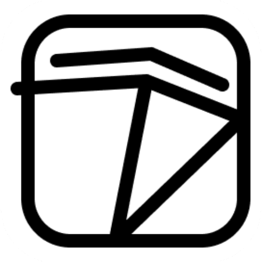

<!-- ===== Sticky, Responsive, Shrinking Header (CSS-toggle hamburger) ===== -->
<header class="td-header" role="banner">
  <!-- CSS toggle (drives hamburger, overlay, drawer) -->
  <input id="tdNavToggle" class="td-toggle" type="checkbox" hidden>

  <div class="td-row">
    <a href="./" class="td-brand" aria-label="Home">
      
      <span class="td-name">Tiara Dobbs</span>
    </a>

    <nav class="td-nav" aria-label="Primary">
      <a href="./projects/">Projects</a>
      <a href="./media/TiaraDobbs.pdf">Resume</a>
      <a href="./about/">About</a>
      
    </nav>

    <!-- Hamburger (label toggles the hidden checkbox) -->
    <label class="td-menu" for="tdNavToggle" aria-label="Open menu">
      <span class="td-bars" aria-hidden="true"></span>
    </label>
  </div>

  <!-- Full-page overlay closes menu on click (also a label) -->
  <label for="tdNavToggle" class="td-overlay" aria-hidden="true"></label>

  <!-- Right slide-out drawer -->
  <aside class="td-drawer" aria-hidden="true">
    <nav class="td-drawer-nav" aria-label="Mobile">
      <a href="./TiaraDobbs-ProductDesign.pdf">Resume</a>
      <a href="./about/">About</a>
    </nav>
  </aside>
</header>

<style>
@import url('https://fonts.googleapis.com/css2?family=Raleway:wght@400;600;700&display=swap');

/* ===== Design tokens ===== */
:root{
  --maxw: 1250px;                    /* content width cap */
  --pad: clamp(16px, 4vw, 24px);     /* safe side padding */
  --shadow: 0 8px 20px rgba(0,0,0,.06), 0 1px 3px rgba(0,0,0,.08);
  --bp-collapse: 900px;              /* collapse to hamburger */
  /* sizes */
  --row-h-large: 72px;
  --row-h-compact: 56px;
  --logo-large: 28px;
  --logo-compact: 22px;
  --name-large: 18px;
  --name-compact: 16px;
  --link-large: 14px;
  --link-compact: 13px;
}

/* ===== Header shell ===== */
.td-header{
  position: fixed; top: 0; left: 0; right: 0; z-index: 1000;
  background: rgba(255,255,255,0.96);
  box-shadow: var(--shadow);
  backdrop-filter: saturate(120%) blur(8px);
  font-family: Raleway, system-ui, -apple-system, Segoe UI, Roboto, sans-serif;
  --row-h: var(--row-h-large);
  --logo: var(--logo-large);
  --name: var(--name-large);
  --link: var(--link-large);
}
.td-header.is-compact{
  --row-h: var(--row-h-compact);
  --logo: var(--logo-compact);
  --name: var(--name-compact);
  --link: var(--link-compact);
}
/* Re-enlarge on hover while compact */
.td-header.is-compact:hover{
  --row-h: var(--row-h-large);
  --logo: var(--logo-large);
  --name: var(--name-large);
  --link: var(--link-large);
}

/* ===== Row ===== */
.td-row{
  height: var(--row-h);
  transition: height .22s ease;
  width: min(100%, var(--maxw));
  margin-inline: auto;
  padding-inline: max(var(--pad), env(safe-area-inset-left), env(safe-area-inset-right));
  display: flex; align-items: center; gap: 16px;
  box-sizing: border-box; min-width: 0;
}

/* ===== Brand ===== */
.td-brand{ display:flex; align-items:center; gap:10px; text-decoration:none; color:#111; min-width:0; }
.td-logo{ height: var(--logo); width:auto; object-fit:contain; display:block; }
.td-name{
  font-weight:700; font-size: var(--name); line-height:1;
  white-space: nowrap; overflow: hidden; text-overflow: ellipsis;
}

/* ===== Desktop nav ===== */
.td-nav{ margin-left:auto; display:flex; align-items:center; gap:min(28px, 4vw); white-space:nowrap; min-width:0; }
.td-nav a{ color:#111; text-decoration:none; font-weight:600; font-size: var(--link); }
.td-nav a:hover{ text-decoration: underline; text-underline-offset: 3px; }

/* ===== Hamburger (hidden on desktop) ===== */
.td-menu{
  display:none; margin-left:auto;
  width:40px; height:40px; cursor:pointer; position:relative;
}
.td-bars, .td-bars::before, .td-bars::after{
  content:""; position:absolute; left:8px; right:8px; height:2px; background:#111;
  transition: transform .25s ease, opacity .25s ease, background-color .25s ease;
}
.td-bars{ top:19px; }                 /* middle */
.td-bars::before{ top:-7px; }         /* top */
.td-bars::after{ top:7px; }           /* bottom */

/* When checkbox is checked → turn into X */
.td-toggle:checked + .td-row .td-menu .td-bars{ background: transparent; }
.td-toggle:checked + .td-row .td-menu .td-bars::before{ transform: translateY(7px) rotate(45deg); }
.td-toggle:checked + .td-row .td-menu .td-bars::after{ transform: translateY(-7px) rotate(-45deg); }

/* ===== Overlay & Drawer (CSS-driven by checkbox) ===== */
.td-overlay{
  position: fixed; inset:0; background: rgba(0,0,0,.45);
  opacity:0; pointer-events:none; transition: opacity .2s ease; z-index: 999;
}
.td-drawer{
  position: fixed; top:0; right:0; height:100dvh;
  width:min(86vw, 360px);
  background:#fff; box-shadow: -8px 0 20px rgba(0,0,0,.12);
  transform: translateX(100%); transition: transform .25s ease;
  z-index:1001; display:flex; flex-direction:column; gap:12px;
  padding-block: 24px;
  padding-inline: max(24px, env(safe-area-inset-right), env(safe-area-inset-left));
  box-sizing: border-box;
}
.td-drawer-nav{ display:grid; gap:8px; }
.td-drawer-nav a{ display:block; padding:10px 4px; color:#111; text-decoration:none; font-weight:600; font-size:16px; }

/* Toggle open states */
.td-toggle:checked ~ .td-overlay{ opacity:1; pointer-events:auto; }
.td-toggle:checked ~ .td-drawer{ transform: translateX(0); }

/* ===== Responsive ===== */
@media (max-width: var(--bp-collapse)){
  .td-nav{ display:none; }
  .td-menu{ display:block; }
}

/* Make sure nothing ever spills off the sides */
.td-header, .td-row, .td-drawer{ box-sizing: border-box; }
</style>

<script>
/* Only used to shrink/grow on scroll (hamburger works without JS) */
document.addEventListener('DOMContentLoaded', () => {
  const header = document.querySelector('.td-header');
  const toggle = document.getElementById('tdNavToggle');
  const drawer = document.querySelector('.td-drawer');

  // 1) Shrink on scroll; grow on hover is pure CSS
  const THRESH = 8;
  const onScroll = () => header.classList.toggle('is-compact', window.scrollY > THRESH);
  onScroll();
  window.addEventListener('scroll', onScroll, { passive: true });

  // 2) Close drawer when a link is clicked (optional UX nicety)
  drawer.addEventListener('click', (e) => {
    if (e.target.matches('a') && toggle.checked) toggle.checked = false;
  });
});
</script>
